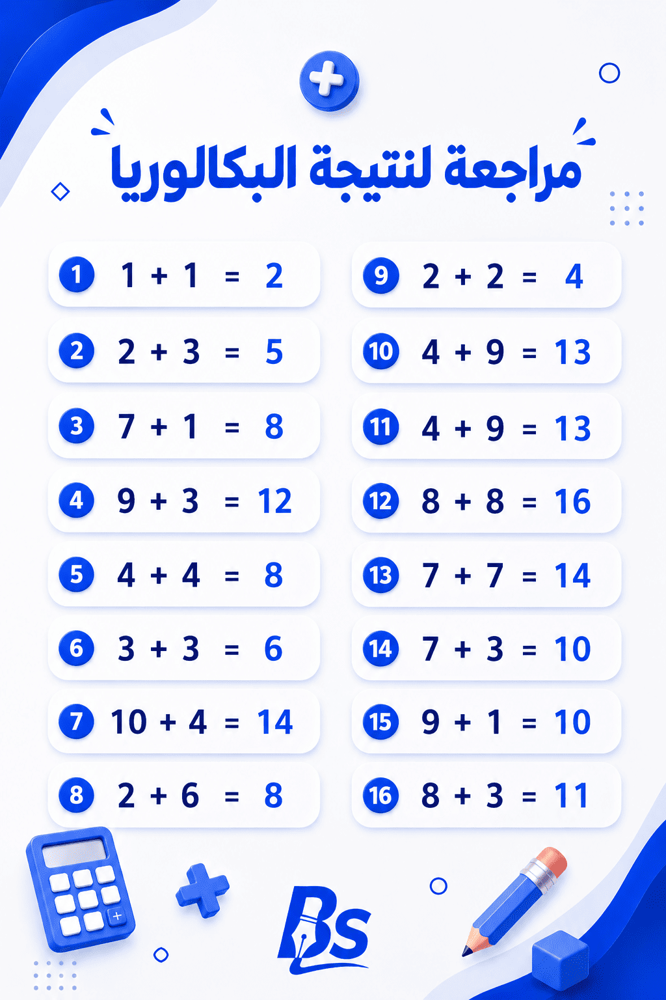

صدرت نتائج شهادة البكالوريا لدورة جوان 2026 اليوم الأحد 12 جويلية 2026
للمتمدرسين والأحرار
للمترشحين النظاميين
اطلب *567# عبر موبيليس / جيزي / أوريدو
تُعلّق قوائم الناجحين في مؤسستك التعليمية
تُسلّم شهادة البكالوريا الرسمية لاحقاً عبر المؤسسة التعليمية
تنشر بعض المواقع ومجموعات التواصل الاجتماعي روابط مزيفة. اعتمد دائماً على المواقع الرسمية فقط.

توجّه إلى bac.onec.dz من متصفح الويب على هاتفك أو حاسوبك.
أدخل رقم تسجيل مترشح البكالوريا الموجود على استدعائك (convocation) للامتحان. و الرقم السري تجده في استمارة التسجيل التي سجلت بها للبكالوريا.
ستظهر لك نتيجتك (ناجح / غير ناجح) ومعدلك الإجمالي بشكل فوري.
يحق للمترشح غير الراضي عن نتيجته تقديم طعن (recours) في مدة محددة تُعلن مع النتائج عبر المؤسسة أو المراكز المعتمدة.
تُسلّم شهادة البكالوريا الرسمية لاحقاً عبر المؤسسة التعليمية. كشف النقاط وثيقة كافية للتسجيل الجامعي مؤقتاً.
بعد الحصول على كشف نقاطك يمكنك التسجيل في موقع التوجيه الجامعي عبر منصة PROGRES للتخصصات الجامعية لعام 2026.
يمكن للمترشحين الأحرار الاطلاع على نتائجهم أيضاً عبر bac.onec.dz باستخدام رقم التسجيل الخاص بهم المُدرج في استدعاء الامتحان و الرقم السري الذي قام بالتسجيل للبكالوريا به.